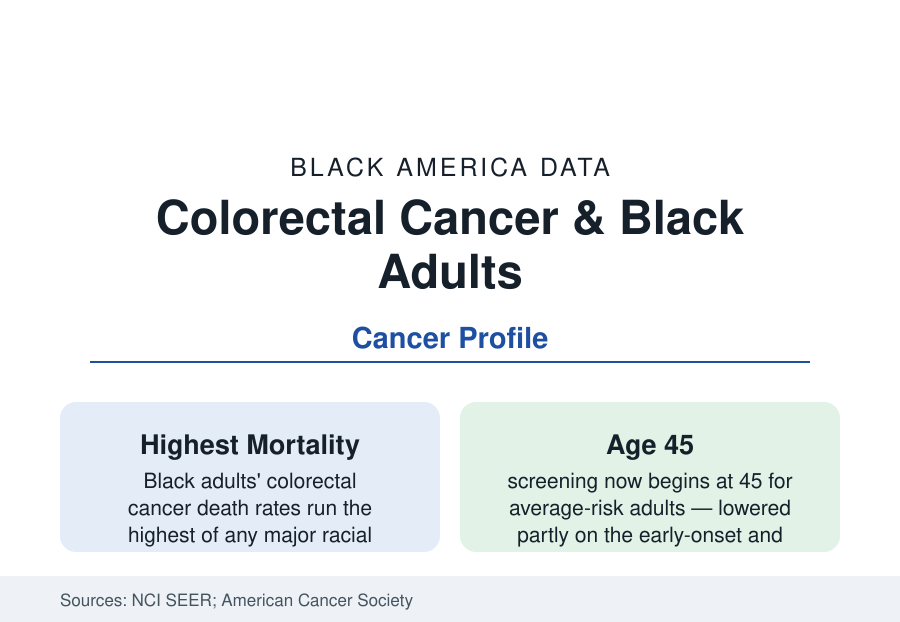

Black Public Health
Colorectal Cancer in Black Adults: The Screening-Age Disease Arriving Early
Black adults develop colorectal cancer more often, younger, and die of it at the highest rates of any major group. The SEER and screening data.

Colorectal cancer is the second-leading cause of cancer death in America when men and women are combined, and its burden falls hardest on Black adults: incidence roughly a fifth higher than White adults', mortality higher still — Black men record the highest colorectal death rates of any major group in the SEER data — and onset arriving measurably younger. The disease is also among the most preventable in oncology, which makes its disparity the screening system's report card. This article reports the colorectal file.
Incidence and the Early-Onset Wave
The registry data's Black specifics are threefold. The overall incidence gap persists despite both groups' rates falling across the screening era (the declines themselves are the prevention success — colonoscopy's polyp removal preventing cancers, not merely finding them). The anatomical distribution differs: Black patients' cancers arise proportionally more in the right (proximal) colon, where colonoscopy's protection is weakest and lesions are flatter and easier to miss — one mechanism inside the mortality gap that screening quality data can address. And the early-onset wave — colorectal cancer rising in adults under 50 across the developed world — strikes the Black data with its own accent: Black young adults' incidence rose alongside everyone's, from a higher base, and the young-onset cases' advanced stages (the symptoms-dismissed pattern in the diagnostic-delay literature) compound. The guideline response is in the current data: the screening age lowered to 45 for average-risk adults (USPSTF 2021, the ACS earlier), with the disparity data cited in the rationale.
Screening: The Modalities and the Completion Gap
Colorectal screening offers what mammography does not — a menu: colonoscopy every ten years, stool-based tests (FIT annually, stool DNA on its cycle), CT colonography — and the coverage data record Black adults' up-to-date rates running modestly below White adults' (in the range of several points in the BRFSS series, both in the sixty-to-seventy percent band). The menu's equity logic cuts both ways in the outcomes research: stool testing lowers the access barrier (no prep day, no escort, no procedure suite) and the mailed-FIT programs in safety-net systems post the file's best gap-closing numbers; but a positive stool test requires the diagnostic colonoscopy to mean anything, and the follow-up completion data stratify sharply — the screening cascade of the mammography profile repeating in the colon. Colonoscopy quality itself (adenoma detection rates by endoscopist, bowel-prep adequacy — worse in the populations with the least prep support in the quality registries) is the file's most technical and most fixable layer.
Stage, Treatment, and Survival
The stage distribution carries the accumulated delay: Black patients present with regional and distant disease at higher shares in the SEER data, and stage-for-stage survival gaps persist below the stage effect — the treatment receipt data (surgery at high-volume centers, chemotherapy initiation and completion for stage III disease, the rectal-cancer multidisciplinary pathway) stratifying in the by-now familiar pattern, with the equal-access systems' analyses narrowing the residuals. The surgical data add the ostomy and sphincter-preservation outcomes (rates differing by hospital and surgeon in the outcomes registries — a quality-of-life file of unusual intimacy), and the genetic layer (Lynch syndrome identification, whose testing cascade under-identifies Black families in the genetics-clinic data) completes the clinical picture.
Risk, Diet, and the Prevention Ledger
The risk-factor data tie the file to the rest of the section: obesity and diabetes (both profiles' populations), processed-meat and alcohol patterns, smoking, and the microbiome research frontier. Aspirin's chemoprevention literature (the USPSTF's graded recommendation for defined age-and-risk bands) and the vitamin D and calcium trials layer over the screening foundation. The incidence declines in the older cohorts prove the system's capability; the young-onset rise — whose causes (diet's transformation, the microbiome, antibiotic eras) the research has not settled — is the file's open question, and its Black data argue for the screening age's continued scrutiny.
Reading the Colorectal Data
Colorectal cancer is the disparity that prevention science knows how to close: find the polyp, remove it, and the cancer never exists. That the highest-mortality population is screened at lower rates, followed up more slowly, and treated at thinner-resourced centers is therefore not a mystery of biology but an audit of delivery — the colon, like the breast file before it, grading the cascade.
More in Black Public Health
Hypertension Among Black Adults: Prevalence, Control, and Consequences
About 55 percent of Black adults have hypertension — the highest rate of any U.S. group. Prevalence, onset, control, and the stroke, heart, and kidney consequences in the data.
Diabetes Among Black Adults: Prevalence and Complications
Nearly one in five Black adults has diabetes, diagnosed or undiagnosed — and its complications fall with particular weight. The CDC data on prevalence, control, and outcomes.
Black Life Expectancy: The Gap at Birth and Its Causes
Black life expectancy at birth is about 73 years, roughly five years below the national figure — the summary measure of every health gap in this section. The CDC data.
Source: National Cancer Institute SEER; American Cancer Society Colorectal Cancer Facts & Figures; CDC Behavioral Risk Factor Surveillance System screening data.